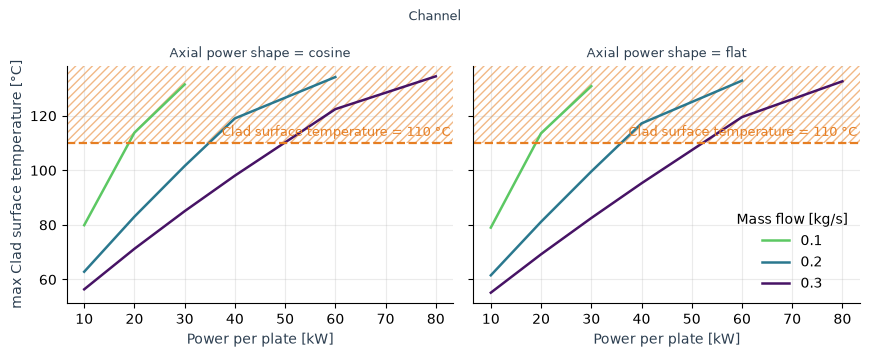
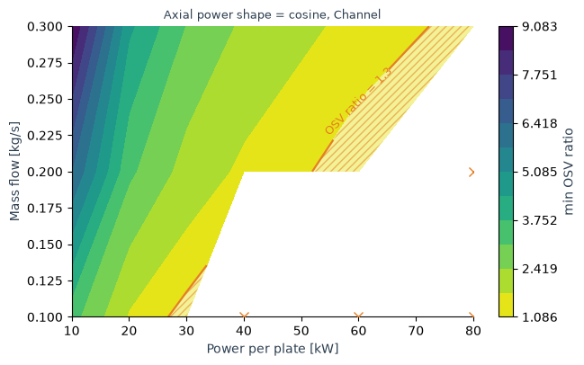
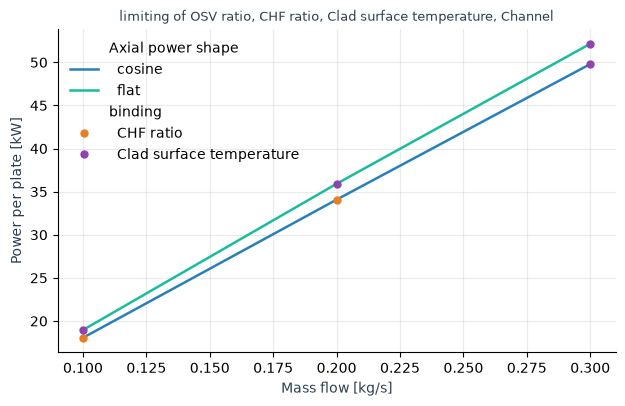

Plot a sweep
stream.viz turns a steady-state parameter sweep into figures and tidy data. Build a Sweep from the cases and their result frames, ask it a question, and call .plot() on the answer, or read its frame.
Each task below starts from what you want to look at and ends at the call that draws it. The page builds a fuel plate and its coolant channel and sweeps them over power, mass flow and axial power shape.
The plate and its channel
The cell builds one plate and channel per axial power shape and a model that solves one case with symmetric_plate_steady_state. It adds the CHF and OSV thresholds to the state, and their ratios to the larger wall flux as CHFR and OSVR. A case whose coolant reaches saturation raises SaturationReachedError, which makes it a hole.
[1]:
import warnings
from functools import partial
import matplotlib.pyplot as plt
import numpy as np
from stream import EffectivePipe, Solid, light_water
from stream.analysis.thresholds import Saha_Zuber_OSV, Sudo_Kaminaga_CHF, threshold_analysis
from stream.calculations import ChannelAndContacts, Fuel
from stream.calculations.channel import Direction, SaturationReachedError
from stream.composition import symmetric_plate, symmetric_plate_steady_state, uniform_x_power_shape, x_boundaries
from stream.physical_models.heat_transfer_coefficient import spl_htc, wall_heat_transfer_coeff
from stream.utilities import cosine_shape
T_in, p_abs = 40.0, 2e5
length, width, gap, cells = 0.7, 0.070, 0.002, 14
clad_N, fuel_N, clad_w, meat_w = 2, 6, 0.0005, 0.0006
z = np.linspace(0.0, length, cells + 1)
pipe = EffectivePipe.rectangular(length=length, edge1=width, edge2=gap, heated_edge=width)
h_wall = partial(
wall_heat_transfer_coeff,
h_spl=spl_htc("regime_dependent", re_bounds=(2000.0, 5000.0), aspect_ratio=gap / width, Lh=length),
)
shapes = {"cosine": cosine_shape, "flat": lambda zb: np.diff(zb) / zb[-1]}
def plate(shape):
meat = np.zeros((cells, fuel_N + 2 * clad_N), dtype=bool)
meat[:, clad_N:-clad_N] = True
fuel = Fuel(
z_boundaries=z,
x_boundaries=x_boundaries(clad_N, fuel_N, clad_w, meat_w),
material=Solid.from_array(np.where(meat, Solid(3500, 750, 40), Solid(2700, 900, 167))),
meat_indices=meat,
power_shape=uniform_x_power_shape(cells, fuel_N, clad_N, clad_w, meat_w, width, z_shaper=shapes[shape]),
y_length=width,
name="Fuel",
)
channel = ChannelAndContacts(z_boundaries=z, fluid=light_water, pipe=pipe, h_wall_func=h_wall, name="Channel")
funcs = {channel: {"mdot": 0.2, "p_abs": p_abs, "Tin": T_in}, fuel: {"power": 1e4}}
return channel, fuel, symmetric_plate(channel, fuel, funcs).to_aggregator()
plates = {shape: plate(shape) for shape in shapes}
agr = plates["cosine"][2]
thresholds = threshold_analysis(CHF=Sudo_Kaminaga_CHF, OSV=partial(Saha_Zuber_OSV, direction=Direction.left))
def model(power, mdot, shape):
channel, fuel, agr = plates[shape]
state = symmetric_plate_steady_state(channel, fuel, mdot=mdot, p_abs=p_abs, power=power, Tin=T_in)
state = thresholds(state, agr, channel.name)
ch = state[channel.name]
T_cool = np.asarray(ch["T_cool"])
T_sat = light_water.sat_temperature(np.asarray(ch["static_pressure"]))
boiling = np.flatnonzero(T_cool >= T_sat)
if boiling.size:
raise SaturationReachedError(channel.name, boiling, T_cool[boiling], T_sat[boiling])
q = np.maximum(np.asarray(ch["q, left"]), np.asarray(ch["q, right"]))
ch["CHFR"] = np.asarray(ch["CHF"]) / q
ch["OSVR"] = np.asarray(ch["OSV"]) / q
return state.to_dataframe()
Build the sweep
A sweep needs three things: the cases, one frame per case, and the aggregator the frames came from. A frame is State.to_dataframe() of a solved case, so the model is any function that takes one case’s parameters as keywords, solves it and returns that frame.
[2]:
from stream.viz import Sweep, at_least, at_most, cases, run_cases
warnings.filterwarnings("ignore", message=r"\d+ of \d+ cases failed")
warnings.filterwarnings("ignore", message="holes in the sweep")
cases_ = cases(power=[10e3, 20e3, 30e3, 40e3, 60e3, 80e3], mdot=[0.1, 0.2, 0.3], shape=["cosine", "flat"])
frames = run_cases(model, cases_)
sweep = Sweep(cases_, frames, agr,
labels={"power": ("Power per plate", "kW", 1e-3),
"mdot": ("Mass flow", "kg/s"),
"shape": ("Axial power shape", ""),
"OSVR": ("OSV ratio", ""),
"CHFR": ("CHF ratio", ""),
"T_wall, left": ("Clad surface temperature", "°C")},
limits={"OSVR": at_least(1.3), "CHFR": at_least(1.3), "T_wall, left": at_most(110.0)})
print(sweep)
Sweep: 36 cases, 8 holes, no uncertainty
parameters: power [10000, 20000, 30000, 40000, 60000, 80000], mdot [0.1, 0.2, 0.3], shape [cosine, flat]
Channel: CHF (profile), CHFR (profile), Gr, left (profile), Gr, right (profile), OSV (profile), OSVR (profile), Pe (profile), Re (profile), T_cool (profile), T_in (scalar), T_out (scalar), T_wall, left (profile), T_wall, right (profile), absolute_pressure (profile), h_left (profile), h_right (profile), mass_flow (scalar), power (scalar), pressure (scalar), q, left (profile), q, right (profile), static_pressure (profile), velocity (profile)
Fuel: T (field), T_wall_left (profile), T_wall_right (profile)
limits: OSVR at least 1.3, CHFR at least 1.3, T_wall, left at most 110
holes: case 18 (power=40000, mdot=0.1, shape=cosine): scaled_newton failed at iteration 11 (Armijo line search found no descent direction); ||F||=9.100e+06.
case 19 (power=40000, mdot=0.1, shape=flat): scaled_newton failed at iteration 100 (exceeded maxit=100); ||F||=nan.
case 24 (power=60000, mdot=0.1, shape=cosine): scaled_newton failed at iteration 100 (exceeded maxit=100); ||F||=9.653e+08.
case 25 (power=60000, mdot=0.1, shape=flat): scaled_newton failed at iteration 100 (exceeded maxit=100); ||F||=9.070e+07.
case 30 (power=80000, mdot=0.1, shape=cosine): scaled_newton failed at iteration 4 (Armijo line search found no descent direction); ||F||=1.700e+10.
case 31 (power=80000, mdot=0.1, shape=flat): scaled_newton failed at iteration 8 (Armijo line search found no descent direction); ||F||=2.914e+08.
case 32 (power=80000, mdot=0.2, shape=cosine): scaled_newton failed at iteration 100 (exceeded maxit=100); ||F||=nan.
case 33 (power=80000, mdot=0.2, shape=flat): scaled_newton failed at iteration 100 (exceeded maxit=100); ||F||=8.686e+03.
casesmakes one dict per combination of levels; a parameter can be a number or a string (a choice, such as a wall law).labels=gives each name its display text, unit and scale;"power": ("Power per plate", "kW", 1e-3)prints watts as kilowatts.limits=declares what the design must respect; a declared limit is drawn on every figure that shows its quantity.
Cases and frames from your own loop work the same way: Sweep(cases_, frames, agr) with None in the slot of a case that did not solve. print(sweep) says what can be asked of the sweep. Here it lists eight holes: every case at 0.1 kg/s from 40 kW on, and both shapes at 80 kW and 0.2 kg/s.
A profile has one value per cell along the channel, a field one value per cell over a plate’s two axes, and a scalar one value per case.
Each question below warns again with the holes it skips. The cell silences that repeat; the section on holes below explains them.
[3]:
warnings.filterwarnings("ignore", message="skipping unsolved")
See a quantity along the channel
[4]:
sweep.profile(["T_cool", "T_wall, left"], where={"power": 40e3, "mdot": 0.2, "shape": "cosine"}).plot()
plt.show()

where=fixes parameters at grid levels; every parameter it leaves free draws one line per level.Several quantities share one axis when they share a unit, and each gets its own colour.
plot(color="power")puts a free parameter on colour;style=andmarker=take the next ones.
For a plate, sweep.field("T", of="Fuel", where=dict(power=40e3, mdot=0.2, shape="cosine")).plot() draws one case’s temperature over both axes.
See how the worst value moves with a parameter
[5]:
sweep.reduce("OSVR", "min", versus="power", where={"shape": "cosine"}).plot(color="mdot", crossing="mark")
plt.show()

The reducer collapses each case to one number:
"min"or"max"for the worst value; the reference below lists the others.versus=is the parameter on the x axis;plot(color="mdot")gives each mass flow its own line.plot(crossing="mark")marks where each line meets its limit and prints the value under the axis.
[6]:
sweep.reduce("T_wall, left", "max", versus="power").plot(color="mdot", col="shape", show_limit="shade")
plt.show()

plot(col="shape")draws one panel per level;row=adds a second direction.plot(show_limit="shade")hatches the unsafe side of the limit; the default"line"draws only the dashed line.
See the worst value over two parameters
[7]:
sweep.reduce("OSVR", "min", versus=("power", "mdot"), where={"shape": "cosine"}).plot(show_limit="shade")
plt.show()

A pair on
versus=makes a map: filled contours over the two parameters.The declared limit is a contour; with
show_limit="shade"its unsafe side is hatched.When the reducer is the limit’s own (
"min"forat_least,"max"forat_most), the limit contour is the curve of the next task.
Find how far a parameter can go
[8]:
sweep.required(["OSVR", "CHFR", "T_wall, left"], solve_for="power", versus="mdot", limiting=True).plot(color="shape")
plt.show()

solve_for=is the parameter walked until the quantity meets its limit,versus=the parameter on the x axis.equals=replaces the declared limit with a number, a dict per quantity, or the name of another quantity.limiting=Truekeeps, at each level, only the quantity that binds; the markers say which one.
The cosine shape reaches a limit at a lower power than the flat one at every flow: at about 18 kW per plate at 0.1 kg/s, on the CHF ratio, up to about 50 kW at 0.3 kg/s, on the clad surface temperature. The flat shape is bound by the clad surface temperature at every flow, from about 19 to about 52 kW.
Read .frame for the numbers: one row per level with lower, value, upper and safe, the side of the crossing where the design is safe.
See the uncertainty
A model that returns its frame with uq_attach bands gives a banded sweep: the sys and stat columns become lower and upper envelopes in every answer.
[9]:
from stream.analysis.UQ import Uncertainty, UQModel
def banded(power, mdot, shape):
uq = UQModel({"power": power, "mdot": mdot}, partial(model, shape=shape))
return uq.uq_attach(power=Uncertainty(systematic_relative=0.02), mdot=Uncertainty(statistical_relative=0.03))
few = cases(power=[20e3, 40e3, 60e3], mdot=[0.2, 0.3], shape="cosine")
banded_sweep = Sweep(few, run_cases(banded, few), agr, labels=sweep.labels, limits=sweep.limits)
chfr = banded_sweep.reduce("CHFR", "min", versus="power", sigma=2.0)
fig, (left, right) = plt.subplots(1, 2, figsize=(11, 4.2), sharey=True)
chfr.plot(ax=left, color="mdot", band="split")
chfr.plot(ax=right, color="mdot", errorbars=True)
plt.show()

UQModelsolves each case once more per uncertain parameter, so the banded sweep above is a small grid of the cosine shape.band=draws"total"(the default),"split"or"none". On the left,"split"shades the systematic part darker inside the total band; the total band reachessysplus twostatfrom the line, because the question usessigma=2.0.plot(errorbars=True)draws the total band as error bars at each case, as on the right.sigma=on the question is the multiple ofstatin the envelopes;sysis added as it is.plot(bound="lower")orbound="upper"draws an envelope instead of the nominal value, and a crossing or a limit contour follows it.
Handle cases that did not solve
A case whose solve failed is a hole: its frame is None, and run_cases keeps the solver’s message. The sweep warns once with every hole, and each question warns again with the holes it skips; the map above marks them with crosses. This page silences these warnings, and the one run_cases gives, because the printed summary lists the holes.
[10]:
patched = Sweep(cases_, frames, agr, fill_holes=True)
print(f"holes: {sorted(patched.holes)}")
print(f"filled: {patched.filled}")
holes: [18, 19, 24, 25, 30, 31, 32, 33]
filled: {}
Every hole here sits at an edge of the grid along one parameter and next to another hole along the other, so none is filled.
fill_holes=Trueinterpolates a hole between its two solved neighbours along a numeric parameter; a hole at the edge of the sweep, or next to another hole, along every numeric parameter, stays a hole.A filled case draws with an open marker and carries
filled=Truein every frame, andrequiredwarns when a crossing rests on it.patched.holesmaps each hole to its message andpatched.filledeach filled hole to the cases it was interpolated from.
Run the cases in parallel
run_cases runs the cases one after the other. mapper= takes any map that keeps the order of the cases, called as mapper(f, cases). The cell runs the six cases of the banded sweep, without their bands, on a pool of threads and compares the frames with a run in order:
[11]:
from concurrent.futures import ThreadPoolExecutor
with ThreadPoolExecutor() as pool:
threaded = run_cases(model, few, mapper=pool.map)
print(all(a.equals(b) for a, b in zip(threaded, run_cases(model, few))))
True
A process pool and dask take the same mapper= form:
from concurrent.futures import ProcessPoolExecutor
import dask
with ProcessPoolExecutor() as pool:
frames = run_cases(model, cases_, mapper=pool.map)
frames = run_cases(model, cases_, mapper=lambda f, xs: dask.compute(*(dask.delayed(f)(x) for x in xs)))
A process pool pickles the model, so the model must be a function defined at module level; threads and dask take any callable.
catch=is the tuple of exceptions that make a case a hole. The default holds the three ways a STREAM solve reports that it did not finish:AlgRuntimeError,TransientRuntimeErrorandSaturationReachedError.Any other exception, a bug in the model among them, stops the run.
Change the look
[12]:
from stream.viz import Label, Style
sheet = Style(palette=("#1b9e77", "#d95f02", "#7570b3"), number_format=".3g", limit_color="#d62728")
chfr = sweep.reduce("CHFR", "min", versus="power", where={"mdot": 0.3})
fig, (left, right) = plt.subplots(1, 2, figsize=(11, 4.2), sharey=True)
chfr.plot(ax=left, crossing="mark")
chfr.plot(ax=right, crossing="mark", style_sheet=sheet, labels={"power": Label("Power", "kW", 1e-3)})
left.set_title("Style()")
right.set_title("sheet")
plt.show()

The left panel is the first plot with the default Style(). The right panel is the second: sheet gives it the palette, the red limit and the ".3g" crossing values, and the label override renames the axis.
style_sheet=onplottakes aStyle: palette, sizes, the limit’s colour and hatch, the map’s levels, and the number format of every printed value.labels=onplotoverrides the sweep’s labels for one figure. ALabelor its tuple(display, unit, scale, fmt)sets how a name prints;fmtis a format spec such as".1f"or a function of the scaled number.with sheet:makes it the sheet of everyplotcall inside the block, and applies its matplotlib settings to your own figures drawn there, so they match.
The cell draws one case’s coolant temperature from the profile’s frame with plain matplotlib inside the block:
[13]:
coolant = sweep.profile("T_cool", where={"power": 40e3, "mdot": 0.2, "shape": "cosine"}).frame
with sheet:
fig, ax = plt.subplots()
ax.plot(coolant["z"], coolant["value"])
ax.set_xlabel("z [m]")
ax.set_ylabel("Coolant temperature [°C]")
plt.show()

A frame with a time column is refused: the module draws steady states only.
The signatures, the reducers and the label and style classes are in the visualization reference.
Warning. stream.viz was written by an AI assistant, and it is a large amount of intricately interwoven code. Reading it, changing it or fixing it will not feel like the rest of STREAM. Before a change is safe, expect to spend real time tracing how Sweep, its questions and Result hand data to each other, and lean on the tests in tests/test_viz.